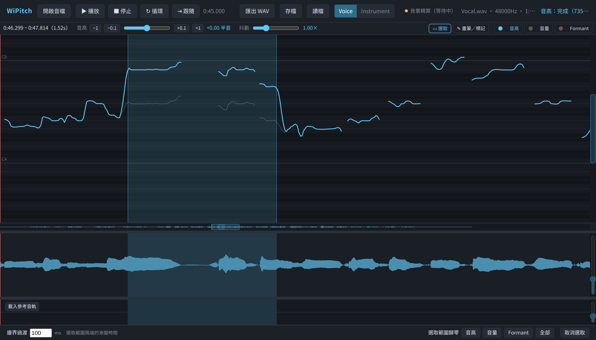

重新分組
左側放「做什麼」，右側放「怎麼調」，避免工具與參數混在同一列。
本報告依照目前已實作的鋼琴捲軸、三種編輯曲線、AI 修音審核、Key／檢測範圍、參考音軌、訓練資料庫與 CPU／GPU 工作狀態，提出六組可落地的介面方向與 HTML 圖例。
問題主要來自功能密度與層級，而非配色本身。工具已分成多條橫列，但主要任務與次要設定看起來有相近權重。

把檔案、工具、lane 放左側；把當前參數、AI 設定與區域資訊放右側。中央只保留音高、波形與參考軌，最符合長時間編輯使用。
左側放「做什麼」，右側放「怎麼調」，避免工具與參數混在同一列。
選取時顯示音高／抖動；畫筆時顯示顫音；AI 審核時顯示框的接受、取消與人工偏移。
側欄是視覺入口，既有 S、B、空白鍵、L、F 等操作可完全保留。
適合：主版本長期演進、桌面螢幕、頻繁修音者。
將大部分控制收起，只在游標、選取或 AI 黃框附近顯示浮動工具。可最大化音高曲線高度，適合精細判斷。
工具列縮成單列，常用動作在選取附近出現；不操作時介面自動退後。
以搜尋開啟「載入參考軌、訓練資料庫、運算模式」等低頻功能，降低常駐按鈕數。
沉浸式設計容易讓人忘記目前工具，游標外觀與左上角模式徽章必須同步。
適合：熟悉快捷鍵、需要精細修音的進階使用者。
把複雜功能組成五個明確步驟。畫面只呈現當前階段的必要控制，首次使用最容易理解。
每階段只突出一個主要按鈕，避免「先選 Key 還是先檢測」的不確定。
步驟可前後切換；返回載入或分析前須顯示會影響哪些編輯。
專業使用者可切換「完整工作站」，避免嚮導阻礙大量編輯。
適合：首次使用者、教學版、明確的單曲修音流程。
針對 WiPitch 已有的黃色 AI 區域、取消勾選、人工再調整與訓練資料回饋，設計專屬審核工作區。
點清單跳到對應時間；點黃框時右側卡片同步選取，狀態不再只靠框上小勾選。
每區提供原始、AI、人工調整三態短循環，讓審核依聽感而非只看曲線。
卡片直接標示「接受／取消／人工調整」會如何進入訓練暫存，降低誤解。
適合：AI 修音完成後的逐區確認與訓練資料建立。
將 Key、AI、編輯參數、參考音軌與運算資訊做成 Dock 模組。使用者可留下自己的工作組合，適合未來持續增加功能。
新增模組時放入 Dock，不必繼續增加橫向列或壓縮時間軸。
提供「手動修音、AI 審核、參考軌對唱」預設，也允許記住使用者配置。
先做固定左右欄＋收合，再視需求加入拖曳排序；可降低版面狀態與測試複雜度。
適合：功能仍會增加、使用者工作方式差異大的中長期版本。
針對較小螢幕、觸控板、高 DPI 與色覺差異，提升控制尺寸及焦點，讓紅綠判斷不只依賴顏色。
播放、工具、黃框勾選與滑桿把手加大；觸控板與手部動作不精確時仍可操作。
偏高用 ▲、偏低用 ▼、人工調整用實心點、取消用虛線，避免紅綠色覺差異。
已有 prefers-reduced-motion 基礎，可把閃爍改為固定外框與文字「處理中」。
適合：所有版本作為顯示偏好，亦可成為預設設計規範。
分數是依目前 WiPitch 的功能密度、AI 審核特性與桌面編輯需求所作的相對評估。
| 方案 | 主要價值 | 專業效率 | 新手理解 | AI 審核 | 工程成本 | 建議 |
|---|---|---|---|---|---|---|
| 01 專業工作站 | 整體資訊架構 | ★★★★★ | ★★★★☆ | ★★★★☆ | 中 | 主架構首選 |
| 02 專注編輯 | 最大化時間軸 | ★★★★★ | ★★★☆☆ | ★★★☆☆ | 中高 | 進階模式 |
| 03 流程導引 | 降低上手門檻 | ★★★☆☆ | ★★★★★ | ★★★★☆ | 高 | 新手模式 |
| 04 AI 審核桌 | 逐區確認與回饋 | ★★★★☆ | ★★★★☆ | ★★★★★ | 中 | 第二優先 |
| 05 模組面板 | 長期擴充 | ★★★★★ | ★★★☆☆ | ★★★★☆ | 最高 | 中長期 |
| 06 高可讀性 | 操作與辨識 | ★★★★☆ | ★★★★★ | ★★★★☆ | 低中 | 共同規範 |
不必一次重寫整個介面。先建立清楚的資訊層級，再加入 AI 審核專屬視圖，最後才做高度客製化。
本報告沒有假設尚未存在的核心功能；建議來自以下目前程式與說明文件。